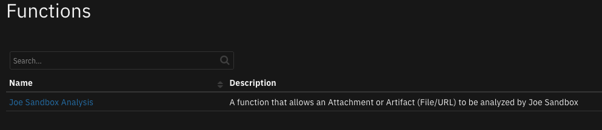
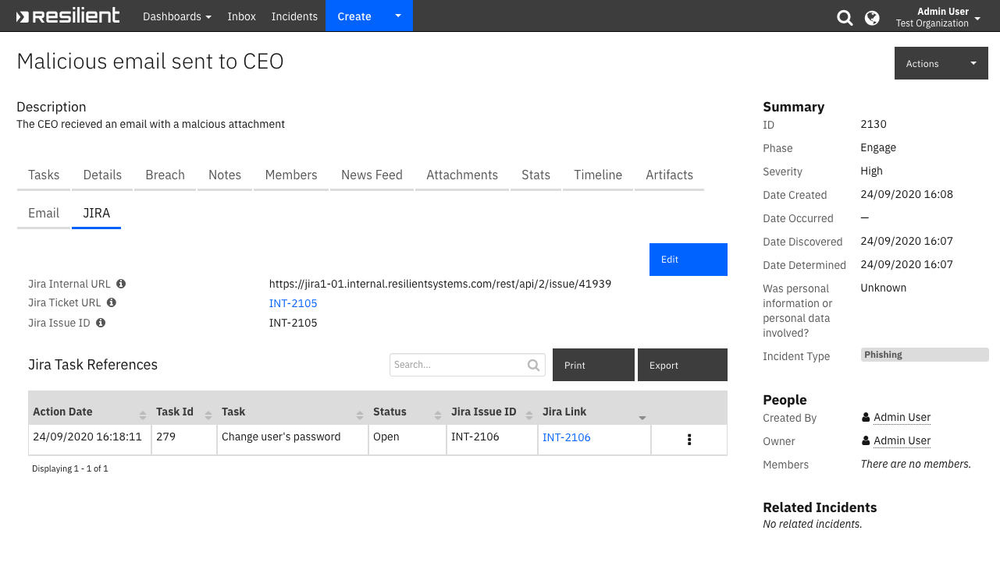
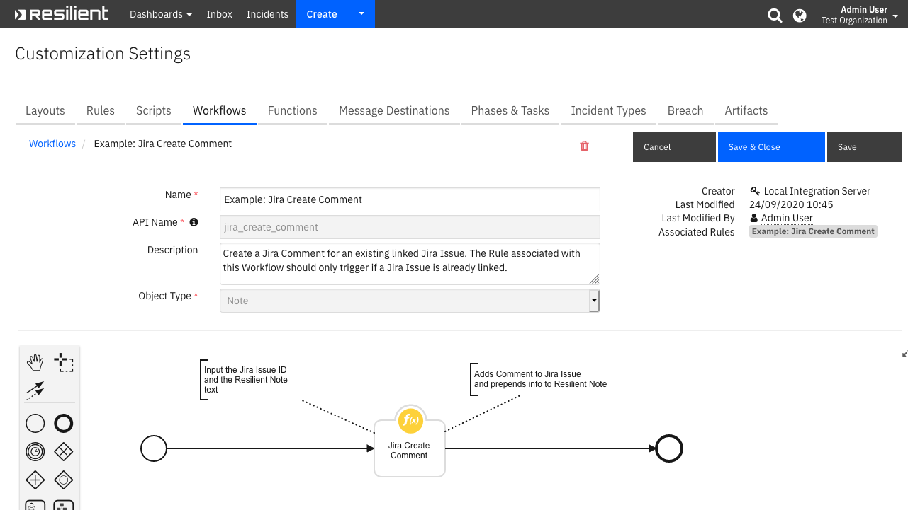
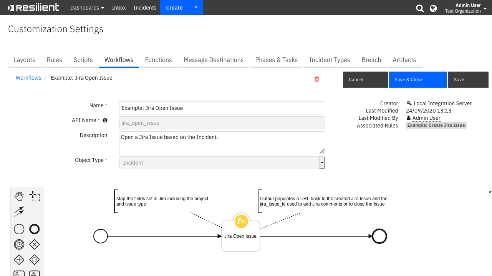
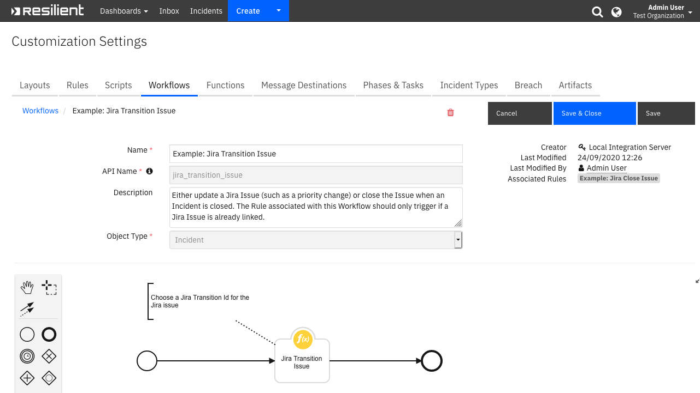

Jira¶
Table of Contents¶
Release Notes¶
Version |
Date |
Notes |
|---|---|---|
3.2.0 |
02/2025 |
Add new app.config setting create_soar_incidents, that controls if the poller creates new SOAR cases or not. |
3.1.0 |
03/2024 |
Update to poller to automatically account for time zone differences between SOAR and Jira. |
3.0.5 |
10/2023 |
Bug fix for poller not closing SOAR incident |
3.0.4 |
10/2023 |
Bug fix for transitioning a Jira issue from SOAR |
3.0.3 |
09/2023 |
Bug fix for jira_transition_issue function |
3.0.2 |
08/2023 |
Bug fix for playbook, Example: Jira Create Comment |
3.0.1 |
05/2023 |
Bug fix for SOAR note synchronization |
3.0.0 |
01/2023 |
|
2.2.0 |
10/2022 |
|
2.1.1 |
05/2022 |
Updated version for pyjwt dependency |
2.1.0 |
04/2022 |
|
2.0.0 |
10/2020 |
|
1.0.2 |
10/2019 |
Improvements to data table handling and Bug fixes |
1.0.1 |
04/2019 |
Support for versions of SOAR 31.0 and beyond |
1.0.0 |
12/2018 |
Initial Release |
For customers upgrading from a previous release to 3.0.0 or greater, the app.config file must be manually edited to add new settings required to each server configuration. See Configuring bidirectional sync
Version 3.1.0 Changes¶
In version 3.1.0 the app.config setting ‘timezone_offset’ has been deprecated. Time zone differences between SOAR and Jira are now accounted for automatically.
Version 3.2.0 Changes¶
In version 3.2.0 a new app.config setting ‘create_soar_incidents’ has been added. When upgrading from a pervious version, manually add this setting in the app.config.
Overview¶
Provides integration with JIRA for Issue Creation, Issue Transition and Comment Creation

This app allows for the tracking of SOAR Incidents and Tasks as Jira Issues. Bidirectional links are saved to allow for easy navigation between the applications.
It also allows for the transitioning of Jira issues when the corresponding incident is closed and adds comments to the Jira issue when a Note is created in SOAR.
Example rules and workflows can used used or modified to meet your business processes.
Key Features¶
Bidirectional sync between SOAR and Jira
Issue creation
Issue transition
Comment creation
Requirements¶
This app supports the IBM Security QRadar SOAR Platform and the IBM Security QRadar SOAR for IBM Cloud Pak for Security.
SOAR platform¶
The SOAR platform supports two app deployment mechanisms, Edge Gateway (formerly App Host) and integration server.
If deploying to a SOAR platform with an Edge Gateway, the requirements are:
SOAR platform >=
51.0.0.The app is in a container-based format (available from the AppExchange as a
zipfile).
If deploying to a SOAR platform with an integration server, the requirements are:
SOAR platform >=
51.0.0.The app is in the older integration format (available from the AppExchange as a
zipfile which contains atar.gzfile).Integration server is running
resilient_circuits>=51.0.0.If using an API key account, make sure the account provides the following minimum permissions:
Name
Permissions
Org Data
Read
Function
Read
Incidents
Read, Edit
Tasks
Read, Edit
Layout
Read, Edit
The following SOAR platform guides provide additional information:
Edge Gateway Deployment Guide or App Host Deployment Guide: provides installation, configuration, and troubleshooting information, including proxy server settings.
Integration Server Guide: provides installation, configuration, and troubleshooting information, including proxy server settings.
System Administrator Guide: provides the procedure to install, configure and deploy apps.
The above guides are available on the IBM Documentation website at ibm.biz/soar-docs. On this web page, select your SOAR platform version. On the follow-on page, you can find the Edge Gateway Deployment Guide, App Host Deployment Guide, or Integration Server Guide by expanding Apps in the Table of Contents pane. The System Administrator Guide is available by expanding System Administrator.
Cloud Pak for Security¶
If you are deploying to IBM Cloud Pak for Security, the requirements are:
IBM Cloud Pak for Security >=
1.10.Cloud Pak is configured with an Edge Gateway.
The app is in a container-based format (available from the AppExchange as a
zipfile).
The following Cloud Pak guides provide additional information:
Edge Gateway Deployment Guide or App Host Deployment Guide: provides installation, configuration, and troubleshooting information, including proxy server settings. From the Table of Contents, select Case Management and Orchestration & Automation > Orchestration and Automation Apps.
System Administrator Guide: provides information to install, configure, and deploy apps. From the IBM Cloud Pak for Security IBM Documentation table of contents, select Case Management and Orchestration & Automation > System administrator.
These guides are available on the IBM Documentation website at ibm.biz/cp4s-docs. From this web page, select your IBM Cloud Pak for Security version. From the version-specific IBM Documentation page, select Case Management and Orchestration & Automation.
Proxy Server¶
The app does support a proxy server.
Python Environment¶
Python 3.9 and 3.11 are supported. Additional package dependencies may exist for each of these packages:
jira~=3.2
pyjwt~=2.4
resilient_circuits>=51.0.0
Installation¶
Install¶
To install or uninstall an App or Integration on the SOAR platform, see the documentation at ibm.biz/soar-docs.
To install or uninstall an App on IBM Cloud Pak for Security, see the documentation at ibm.biz/cp4s-docs and follow the instructions above to navigate to Orchestration and Automation.
App Configuration¶
The following table provides the settings you need to configure the app. These settings are made in the app.config file. See the documentation discussed in the Requirements section for the procedure.
Config |
Required |
Example |
Description |
|---|---|---|---|
auth_method |
Yes |
|
The method of authentication to use when connecting to your Jira platform. Supported methods are |
auth_token |
Required for |
`` |
Authentication token |
access_token_secret |
Required for |
|
Access token secret created through Jira OAuth 1.0a 3LO. Details below. |
consumer_key_name |
Required for |
|
Consumer Key name created through Jira UI. Details below. |
private_rsa_key_file_path |
Required for |
|
Path to file containing private RSA key associated with the public key that was uploaded in the UI. Details below. |
create_soar_incidents |
No |
|
Defaults to true. If true the poller creates new SOAR incidents from Jira issues that match the given filters. |
jira_dt_name |
No |
|
The datatable in which to store the data for synced SOAR tasks. Default is |
access_token |
Required for |
|
Access token created through Jira OAuth 1.0a 3LO. Details below. |
max_issues_returned |
Yes |
|
Max number of issues that can be returned from Jira issue search. |
password |
Required for |
|
The password or API Key for the Jira account to use with this integration. |
poller_filters |
Yes |
|
Search filters for Jira issue to sync with SOAR cases. |
polling_interval |
Yes |
|
Interval to poll Jira for changes (in seconds). |
polling_lookback |
Yes |
|
Amount of time for poller to look back when syncing Jira issues and SOAR cases (in minutes). |
timeout |
No |
|
The number of seconds to timeout after when making a request to the Jira platform. |
url |
Yes |
|
The URL of your Jira platform. |
user |
Required for |
|
The username of the Jira account to use with this integration. They must be a user on the Jira platform with the correct permissions. |
verify_cert |
No |
|
A boolean value. Set to |
http_proxy |
No |
|
Your HTTP Proxy. |
https_proxy |
No |
|
Your HTTPS Proxy. |
soar_create_case_template |
No |
|
Path to override template for automatic case creation. See Poller Considerations. |
soar_update_case_template |
No |
|
Path to override template for automatic case updating. See Poller Considerations. |
soar_close_case_template |
No |
|
Path to override template for automatic case closing. See Poller Considerations. |
soar_update_task_template |
No |
|
Path to override template for automatic case updating. See Poller Considerations. |
Multi-tenancy¶
Starting in version 2.2.0, more than one Jira instance can be configured for SOAR. For enterprises with only one Jira instance, your app.config file continues to define the Jira instance under the [fn_jira] section header.
For enterprises with more than one Jira instance, each instance has it’s own section header, such as [fn_jira:jira_label1] where jira_label1 represents any label helpful to define you Jira environment. You cannot mix [fn_jira] and [fn_jira:jira_label1] sections headers.
Be aware that modifications to the workflows is needed to correctly pass this label through the jira_label function input field if the Jira server/servers in the app.config have labels.
If you have existing custom workflows, see Creating workflows when server/servers in app.config are labeled for more information about changing them to reference the jira_label function input field.
Configuring OAuth¶
OAuth authentication is supported with OAuth 1.0a protocol on Jira Server and Jira Cloud. This requires setting some configurations through the Jira UI followed by the 3 legged-dance described in the docs linked below. The main goal of this process is to generate a public and private RSA key, as well as a access_token and access_token_secret. Follow the steps at the appropriate links to setup the RSA keys and generate an access token. Then set the values as appropriate in your app.config. It is recommended to use App Host secrets to store the tokens if deploying on App Host.
Follow the instructions at the appropriate link to create a public and private key and to create an incoming link in Jira:
OAuth on Jira Server (only step 1)
OAuth 1.0a on Jira Cloud (only step 2)
As of v2.1.0, this app only supports OAuth 1.0a authentication to Jira.
Once you’ve completed the linked step above, you can continue with the rest of Jira’s guide (in Java) or you can follow the Python steps below.
Note: these steps have been verified on Python 3.6. No matter the environment that you run the app in, it is recommended to run these steps with Python 3.6.
Create a python environment on a machine that has internet access to your Jira server. Install
jirain the python environment and the required associated dependencies$ pip install jira cryptography pyjwt IPython
This will also install the
jirashellutility which will be used in the next step.Use the
jirashellutility to preform the OAuth dance:$ jirashell -s <url_of_your_jira_server> --oauth-dance --consumer-key <name_of_consumer_key_in_jira_ui> --key-cert <path_to_private_rsa_key> --print-tokens
This will prompt you at a point to follow a link to sign-in and authorize the OAuth tokens. Click “Allow” and return to the shell. Type
yand hit enter. The Access Token and Access Token Secret will be printed to your terminal. You can now exit thejirashellprompt.Use the token and secret printed to your terminal to provide access to Jira for this app. If running in App Host, it is recommended to enter the values of the tokens as secrets in the app’s Configuration tab by clicking Add Secret.
In App Host, upload the private key as a file by clicking New File. Paste the contents of the private key into the file and ensure that the path to the file is the same as what you wrote in your app.config.
Poller Considerations¶
If the poller is configured in the app.config, then SOAR cases that are linked to Jira issues are updated when the linked Jira issue is changed. The Jira issues are found when running the Jira search using the filters given in the app.config. Only Jira issues that meet the search requirements and have been updated within the polling_lookback time frame are returned from the search.
Disable the poller by changing the app.config setting to poller_interval=0.
SOAR incident property requirements for poller updates¶
In order for the poller to update a SOAR incident, the SOAR incident property jira_issue_id is required to have a value. If the Jira servers are labeled in the app.config then the SOAR incident property jira_server is also required.
Poller Templates for SOAR Cases¶
It may be necessary to modify the templates used to create, update, or close SOAR cases based on your required custom fields in SOAR.
This is especially relevant if you have required custom close fields that need to be filled when closing a case in SOAR. If that is the case, be sure to implement a custom close_case_template and reference those required close fields in the template.
When overriding the template in App Host, specify the file path for each file as /var/rescircuits.
Below are the default templates used which can be copied, modified, and used with app_config’s
soar_create_case_template, soar_update_case_template, and soar_close_case_template settings to override the default templates.
soar_create_case_template.jinja
{
{# JINJA template for creating a new SOAR incident from an endpoint #}
"name": "{{ fields["summary"] }}",
"description": {% if renderedFields["description"] is none %} null {% else %} "{{ renderedFields["description"] }}" {% endif %},
"severity_code": "{{ fields["priority"]["name"] }}",
"create_date": {{ fields["created"] }},
"discovered_date": {{ fields["created"] }},
"plan_status": "A",
{# specify your custom fields for your endpoint solution #}
"properties": {
"jira_internal_url": "{{ internal_url }}",
"jira_issue_id": "{{ key }}",
"jira_server": "{{ jira_server }}",
"jira_url": "{{ url }}",
"jira_project_key": "{{ fields["project"]["key"] }}",
"jira_issue_status": "{{ fields["status"]["name"] }}",
"jira_issue_type": "{{ fields["issuetype"]["name"] }}",
"jira_linked_to_incident": true
},
{# add comments as necessary #}
"comments": [
{% for note in renderedFields["comment"] %}
{ "text": { "format": "html", "content": "{{ note }}" }, "type": "incident" }
{% if not loop.last %}
,
{% endif %}
{% endfor %}
]
}
soar_update_case_template.jinja
{
{# JINJA template for updating a new SOAR incident from an endpoint #}
"version": {{ soar["vers"] + 1 }},
"changes": [
{
"old_value": {"text": "{{ soar["severity_code"] }}"},
"new_value": {"text": "{{ jira["fields"]["priority"]["name"] }}"},
"field": {"name": "severity_code"}
},
{
"old_value": {"text": "{{ soar["properties"]["jira_issue_id"] }}"},
"new_value": {"text": "{{ jira["key"] }}"},
"field": {"name": "jira_issue_id"}
},
{
"old_value": {"text": "{{ soar["properties"]["jira_server"] }}"},
"new_value": {"text": "{{ jira["jira_server"] }}"},
"field": {"name": "jira_server"}
},
{
"old_value": {"text": "{{ soar["properties"]["jira_project_key"] }}"},
"new_value": {"text": "{{ jira["fields"]["project"]["key"] }}"},
"field": {"name": "jira_project_key"}
},
{
"old_value": {"text": "{{ soar["properties"]["jira_issue_status"] }}"},
"new_value": {"text": "{{ jira["fields"]["status"]["name"] }}"},
"field": {"name": "jira_issue_status"}
}
]
}
soar_close_case_template.jinja
{
{# JINJA template for closing a SOAR incident using endpoint data #}
"version": {{ soar["vers"] + 1 }},
"changes": [
{
"old_value": {"text": null},
"new_value": {"text": "Resolved"},
"field": {"name": "resolution_id"}
},
{
"old_value": {"text": null},
"new_value": {"text": "Closed by Jira"},
"field": {"name": "resolution_summary"}
},
{
"old_value": {"text": "{{ soar["properties"]["jira_issue_status"] }}"},
"new_value": {"text": "{{ jira["fields"]["status"]["name"] }}"},
"field": {"name": "jira_issue_status"}
},
{
"old_value": {"text": "A"},
"new_value": {"text": "C"},
"field": {"name": "plan_status"}
},
{# The following is required for the automation playbook, Jira Close Issue, to not run when the poller closes a SOAR incident. #}
{
"old_value": {"boolean": {% if soar["properties"]["jira_issue_closed_on_jira"] is none %} null {% elif soar["properties"]["jira_issue_closed_on_jira"] is False %} false {% else %} true {% endif %}},
"new_value": {"boolean": true},
"field": {"name": "jira_issue_closed_on_jira"}
}
]
}
Custom Layouts¶
Import the Data Tables and Custom Fields like the screenshot below:

Function - Jira Create Comment¶
Create a Jira comment. To be used when a SOAR Note is created. See example workflow for configuration of function pre-processor and post-processor scripts

Inputs:
Name |
Type |
Required |
Example |
Tooltip |
|---|---|---|---|---|
|
|
No |
|
- |
|
|
No |
|
The comment to add to the issue in Jira |
|
|
No |
|
The ID of the issue in Jira. Also known as the issue key. E.g: “JRA-1330” |
|
|
No |
|
Enter the label of the server you wish to use |
|
|
No |
|
- |
Outputs:
NOTE: This example might be in JSON format, but
resultsis a Python Dictionary on the SOAR platform.
results = {
"content": {
"author": {
"accountId": "123456",
"accountType": "atlassian",
"active": true,
"avatarUrls": {
"16x16": "https://secure.gravatar.com/avatar/2cfc976767db44422e9281fb012845a2?d=https%3A%2F%2Favatar-management--avatars.us-west-2.prod.public.atl-paas.net%2Finitials%2FR-1.png",
"24x24": "https://secure.gravatar.com/avatar/2cfc976767db44422e9281fb012845a2?d=https%3A%2F%2Favatar-management--avatars.us-west-2.prod.public.atl-paas.net%2Finitials%2FR-1.png",
"32x32": "https://secure.gravatar.com/avatar/2cfc976767db44422e9281fb012845a2?d=https%3A%2F%2Favatar-management--avatars.us-west-2.prod.public.atl-paas.net%2Finitials%2FR-1.png",
"48x48": "https://secure.gravatar.com/avatar/2cfc976767db44422e9281fb012845a2?d=https%3A%2F%2Favatar-management--avatars.us-west-2.prod.public.atl-paas.net%2Finitials%2FR-1.png"
},
"displayName": "test",
"emailAddress": "test@example.com",
"self": "https://example.com/rest/api/2/user?accountId=123456",
"timeZone": "America/New_York"
},
"body": "404 error is thrown",
"created": "2023-01-31T09:52:58.464-0500",
"id": "10350",
"jira_url": "\u003ca href=\"https://example.com/browse/JRA-45\"\u003eJRA-45\u003c/a\u003e",
"jsdPublic": true,
"self": "https://example.com/rest/api/2/issue/10055/comment/10350",
"updateAuthor": {
"accountId": "123456",
"accountType": "atlassian",
"active": true,
"avatarUrls": {
"16x16": "https://secure.gravatar.com/avatar/2cfc976767db44422e9281fb012845a2?d=https%3A%2F%2Favatar-management--avatars.us-west-2.prod.public.atl-paas.net%2Finitials%2FR-1.png",
"24x24": "https://secure.gravatar.com/avatar/2cfc976767db44422e9281fb012845a2?d=https%3A%2F%2Favatar-management--avatars.us-west-2.prod.public.atl-paas.net%2Finitials%2FR-1.png",
"32x32": "https://secure.gravatar.com/avatar/2cfc976767db44422e9281fb012845a2?d=https%3A%2F%2Favatar-management--avatars.us-west-2.prod.public.atl-paas.net%2Finitials%2FR-1.png",
"48x48": "https://secure.gravatar.com/avatar/2cfc976767db44422e9281fb012845a2?d=https%3A%2F%2Favatar-management--avatars.us-west-2.prod.public.atl-paas.net%2Finitials%2FR-1.png"
},
"displayName": "test",
"emailAddress": "test@example.com",
"self": "https://example.com/rest/api/2/user?accountId=123456",
"timeZone": "America/New_York"
},
"updated": "2023-01-31T09:52:58.464-0500"
},
"inputs": {
"incident_id": 2230,
"jira_comment": "\u003cdiv class=\"rte\"\u003e\u003cdiv\u003e404 error is thrown\u003c/div\u003e\u003c/div\u003e",
"jira_issue_id": "",
"jira_label": "my-server",
"task_id": 214
},
"metrics": {
"execution_time_ms": 599,
"host": "local",
"package": "fn-jira",
"package_version": "3.0.0",
"timestamp": "2023-01-31 09:52:58",
"version": "1.0"
},
"raw": null,
"reason": null,
"success": true,
"version": 2.0
}
Example Pre-Process Script:
if note.type == "task":
inputs.task_id = task.id
inputs.jira_issue_id = "" # leave empty for tasks
else:
inputs.jira_issue_id = incident.properties.jira_issue_id
inputs.jira_label = incident.properties.jira_server
inputs.jira_comment = note.text.content
inputs.incident_id = incident.id
Example Post-Process Script:
Function - Jira Open Issue¶
Create a jira issue. To be used when a SOAR Incident is created. See example workflow for configuration of function pre-processor and post-processor scripts

Inputs:
Name |
Type |
Required |
Example |
Tooltip |
|---|---|---|---|---|
|
|
No |
|
- |
|
|
No |
|
A JSON String of the fields to set in Jira |
|
|
No |
|
Enter the label of the server you wish to use |
|
|
No |
|
- |
Notes¶
jira_fields example:
{
"project": "ENG",
"issuetype": "BUG",
"priority": {"name": "Low"},
"summary": "IBM SOAR: Review artifact '1.2.3.4'",
"description": "Created from IBM SOAR"
}
If using the Rule activity fields
jira_project_idorjira_issue_type, modify the select list to represent your instance of Jira’s projects, and issue types, respectively.
Outputs:
NOTE: This example might be in JSON format, but
resultsis a Python Dictionary on the SOAR platform.
results = {
"content": {
"issue": {
"expand": "renderedFields,names,schema,operations,editmeta,changelog,versionedRepresentations,customfield_10010.requestTypePractice",
"fields": {
"aggregateprogress": {
"progress": 0,
"total": 0
},
"aggregatetimeestimate": null,
"aggregatetimeoriginalestimate": null,
"aggregatetimespent": null,
"assignee": {
"accountId": "123456",
"accountType": "atlassian",
"active": true,
"avatarUrls": {
"16x16": "https://secure.gravatar.com/avatar/2cfc976767db44422e9281fb012845a2?d=https%3A%2F%2Favatar-management--avatars.us-west-2.prod.public.atl-paas.net%2Finitials%2FR-1.png",
"24x24": "https://secure.gravatar.com/avatar/2cfc976767db44422e9281fb012845a2?d=https%3A%2F%2Favatar-management--avatars.us-west-2.prod.public.atl-paas.net%2Finitials%2FR-1.png",
"32x32": "https://secure.gravatar.com/avatar/2cfc976767db44422e9281fb012845a2?d=https%3A%2F%2Favatar-management--avatars.us-west-2.prod.public.atl-paas.net%2Finitials%2FR-1.png",
"48x48": "https://secure.gravatar.com/avatar/2cfc976767db44422e9281fb012845a2?d=https%3A%2F%2Favatar-management--avatars.us-west-2.prod.public.atl-paas.net%2Finitials%2FR-1.png"
},
"displayName": "test",
"emailAddress": "test@example.com",
"self": "https://example.com/rest/api/2/user?accountId=123456",
"timeZone": "America/New_York"
},
"attachment": [],
"comment": {
"comments": [],
"maxResults": 0,
"self": "https://example.com/rest/api/2/issue/10058/comment",
"startAt": 0,
"total": 0
},
"components": [],
"created": "2023-01-31T12:57:59.000-0500",
"creator": {
"accountId": "123456",
"accountType": "atlassian",
"active": true,
"avatarUrls": {
"16x16": "https://secure.gravatar.com/avatar/2cfc976767db44422e9281fb012845a2?d=https%3A%2F%2Favatar-management--avatars.us-west-2.prod.public.atl-paas.net%2Finitials%2FR-1.png",
"24x24": "https://secure.gravatar.com/avatar/2cfc976767db44422e9281fb012845a2?d=https%3A%2F%2Favatar-management--avatars.us-west-2.prod.public.atl-paas.net%2Finitials%2FR-1.png",
"32x32": "https://secure.gravatar.com/avatar/2cfc976767db44422e9281fb012845a2?d=https%3A%2F%2Favatar-management--avatars.us-west-2.prod.public.atl-paas.net%2Finitials%2FR-1.png",
"48x48": "https://secure.gravatar.com/avatar/2cfc976767db44422e9281fb012845a2?d=https%3A%2F%2Favatar-management--avatars.us-west-2.prod.public.atl-paas.net%2Finitials%2FR-1.png"
},
"displayName": "test",
"emailAddress": "test@example.com",
"self": "https://example.com/rest/api/2/user?accountId=123456",
"timeZone": "America/New_York"
},
"customfield_10001": null,
"customfield_10002": null,
"customfield_10003": null,
"customfield_10004": null,
"customfield_10005": null,
"customfield_10006": null,
"customfield_10007": null,
"customfield_10008": null,
"customfield_10009": null,
"customfield_10010": null,
"customfield_10014": null,
"customfield_10015": null,
"customfield_10016": null,
"customfield_10017": null,
"customfield_10018": {
"hasEpicLinkFieldDependency": false,
"nonEditableReason": {
"message": "The Parent Link is only available to Jira Premium users.",
"reason": "PLUGIN_LICENSE_ERROR"
},
"showField": false
},
"customfield_10019": "0|i0000v:",
"customfield_10020": null,
"customfield_10021": null,
"customfield_10022": null,
"customfield_10023": null,
"customfield_10024": null,
"customfield_10025": null,
"customfield_10026": null,
"customfield_10027": null,
"customfield_10028": null,
"customfield_10029": null,
"customfield_10030": null,
"customfield_10031": null,
"customfield_10035": null,
"description": "IBM SOAR Link: https://test.com:443/#incidents/2231\n\nCreated in IBM SOAR",
"duedate": null,
"environment": null,
"fixVersions": [],
"issuelinks": [],
"issuerestriction": {
"issuerestrictions": {},
"shouldDisplay": true
},
"issuetype": {
"avatarId": 10315,
"description": "Stories track functionality or features expressed as user goals.",
"entityId": "28f65659-c37e-43ad-a17f-1d00d8d6d9ac",
"hierarchyLevel": 0,
"iconUrl": "https://example.com/rest/api/2/universal_avatar/view/type/issuetype/avatar/10315?size=medium",
"id": "10007",
"name": "Story",
"self": "https://example.com/rest/api/2/issuetype/10007",
"subtask": false
},
"labels": [],
"lastViewed": null,
"priority": {
"iconUrl": "https://example.com/images/icons/priorities/low.svg",
"id": "4",
"name": "Low",
"self": "https://example.com/rest/api/2/priority/4"
},
"progress": {
"progress": 0,
"total": 0
},
"project": {
"avatarUrls": {
"16x16": "https://example.com/rest/api/2/universal_avatar/view/type/project/avatar/10419?size=xsmall",
"24x24": "https://example.com/rest/api/2/universal_avatar/view/type/project/avatar/10419?size=small",
"32x32": "https://example.com/rest/api/2/universal_avatar/view/type/project/avatar/10419?size=medium",
"48x48": "https://example.com/rest/api/2/universal_avatar/view/type/project/avatar/10419"
},
"id": "10001",
"key": "JRA",
"name": "Test Project",
"projectTypeKey": "software",
"self": "https://example.com/rest/api/2/project/10001",
"simplified": true
},
"reporter": {
"accountId": "123456",
"accountType": "atlassian",
"active": true,
"avatarUrls": {
"16x16": "https://secure.gravatar.com/avatar/2cfc976767db44422e9281fb012845a2?d=https%3A%2F%2Favatar-management--avatars.us-west-2.prod.public.atl-paas.net%2Finitials%2FR-1.png",
"24x24": "https://secure.gravatar.com/avatar/2cfc976767db44422e9281fb012845a2?d=https%3A%2F%2Favatar-management--avatars.us-west-2.prod.public.atl-paas.net%2Finitials%2FR-1.png",
"32x32": "https://secure.gravatar.com/avatar/2cfc976767db44422e9281fb012845a2?d=https%3A%2F%2Favatar-management--avatars.us-west-2.prod.public.atl-paas.net%2Finitials%2FR-1.png",
"48x48": "https://secure.gravatar.com/avatar/2cfc976767db44422e9281fb012845a2?d=https%3A%2F%2Favatar-management--avatars.us-west-2.prod.public.atl-paas.net%2Finitials%2FR-1.png"
},
"displayName": "test",
"emailAddress": "test@example.com",
"self": "https://example.com/rest/api/2/user?accountId=123456",
"timeZone": "America/New_York"
},
"resolution": null,
"resolutiondate": null,
"security": null,
"status": {
"description": "",
"iconUrl": "https://example.com/",
"id": "10003",
"name": "To Do",
"self": "https://example.com/rest/api/2/status/10003",
"statusCategory": {
"colorName": "blue-gray",
"id": 2,
"key": "new",
"name": "To Do",
"self": "https://example.com/rest/api/2/statuscategory/2"
}
},
"statuscategorychangedate": "2023-01-31T12:57:59.508-0500",
"subtasks": [],
"summary": "IBM SOAR: h",
"timeestimate": null,
"timeoriginalestimate": null,
"timespent": null,
"timetracking": {},
"updated": "2023-01-31T12:57:59.000-0500",
"versions": [],
"votes": {
"hasVoted": false,
"self": "https://example.com/rest/api/2/issue/JRA-47/votes",
"votes": 0
},
"watches": {
"isWatching": true,
"self": "https://example.com/rest/api/2/issue/JRA-47/watchers",
"watchCount": 1
},
"worklog": {
"maxResults": 20,
"startAt": 0,
"total": 0,
"worklogs": []
},
"workratio": -1
},
"id": "10058",
"key": "JRA-47",
"self": "https://example.com/rest/api/2/issue/10058"
},
"issue_key": "JRA-47",
"issue_url": "https://example.com/browse/JRA-47",
"issue_url_internal": "https://example.com/rest/api/2/issue/10058",
"jira_dt_name": "jira_task_references"
},
"inputs": {
"incident_id": 2231,
"jira_fields": "{ \"summary\":\"IBM SOAR: h\",\"issuetype\":\"Story\",\"project\":\"JRA\",\"description\":\"Created in IBM SOAR\",\"priority\":{ \"name\":\"Low\" } }",
"jira_label": "my-server"
},
"metrics": {
"execution_time_ms": 1748,
"host": "local",
"package": "fn-jira",
"package_version": "3.0.0",
"timestamp": "2023-01-31 12:57:59",
"version": "1.0"
},
"raw": null,
"reason": null,
"success": true,
"version": 2.0
}
Example Pre-Process Script:
# Example: Jira Open Issue [Incident] pre-processing script
def list_to_json_str(l):
"""
Function that converts a list into a JSON string.
Supports types: basestring, unicode, bool, int, list and dicts.
If the value is None, it sets it to False.
"""
list_as_str = ''
json_entry = u'{0},'
json_entry_str = u'"{0}",'
for value in l:
if not value:
value = False
if isinstance(value, list):
list_as_str += json_entry.format(list_to_json_str(value))
elif isinstance(value, dict):
list_as_str += json_entry.format(dict_to_json_str(value))
elif isinstance(value, str):
value = value.replace(u'"', u'\\"').replace("\n", "\\n")
list_as_str += json_entry_str.format(str(value))
elif isinstance(value, bool):
list_as_str += json_entry.format('true' if value else 'false')
elif isinstance(value, int):
list_as_str += json_entry.format(value)
else:
helper.fail('list_to_json_str does not support this type: {}'.format(type(value)))
return u'{} {} {}'.format(u'[', list_as_str[:-1], u']')
def dict_to_json_str(d):
"""
Function that converts a dictionary into a JSON string.
Supports types: basestring, unicode, bool, int, list and nested dicts.
If the value is None, it sets it to False.
"""
json_entry = u'"{0}":{1}'
json_entry_str = u'"{0}":"{1}"'
entries = []
for entry in d:
key = entry
value = d[entry]
if not value:
value = False
if isinstance(value, list):
entries.append(json_entry.format(str(key), list_to_json_str(value)))
elif isinstance(value, dict):
entries.append(json_entry.format(key, dict_to_json_str(value)))
elif isinstance(value, str):
value = value.replace(u'"', u'\\"').replace("\n", "\\n")
entries.append(json_entry_str.format(str(key), str(value)))
elif isinstance(value, bool):
entries.append(json_entry.format(key, 'true' if value else 'false'))
elif isinstance(value, int):
entries.append(json_entry.format(str(key), value))
else:
helper.fail('dict_to_json_str does not support this type: {}'.format(type(value)))
return u'{} {} {}'.format(u'{', ','.join(entries), u'}')
if playbook.inputs.jira_label:
inputs.jira_label = playbook.inputs.jira_label
else:
inputs.jira_label = incident.properties.jira_label
# ID of this incident
inputs.incident_id = incident.id
# A map for JIRA priorities
priority_map = { "Lowest": {"name": "Lowest"}, "Low": {"name": "Low"}, "Medium": {"name": "Medium"}, "High": {"name": "High"}, "Highest": {"name": "Highest"} }
jira_priority = priority_map.get(incident.severity_code, {"name": "Low"})
# Define JIRA fields here
inputs.jira_fields = dict_to_json_str({
"project": playbook.inputs.jira_project_id,
"issuetype": playbook.inputs.jira_issue_type,
"priority": jira_priority,
"summary": u"IBM SOAR: {}".format(incident.name),
"description": incident.description.content if incident.get("description") else "Created in IBM SOAR"
})
Example Post-Process Script:
create_result = playbook.functions.results.create_result
if create_result.get("success"):
results_content = create_result.get("content", {})
issue_key = results_content.get("issue_key")
incident.properties.jira_url = "<a href='{}' target='blank'>{}</a>".format(results_content.get("issue_url"), results_content.get("issue_key"))
incident.properties.jira_internal_url = results_content.get("issue_url_internal")
incident.properties.jira_issue_id = issue_key
incident.properties.jira_server = playbook.inputs.jira_label
incident.properties.jira_project_key = issue_key[:issue_key.index("-")]
incident.properties.jira_issue_status = "To Do"
Function - Jira Transition Issue¶
Transition a Jira issue. This can be used when a SOAR Incident is closed or to change the Jira Issue’s workflow state. See example workflow for configuration of function pre-processor and post-processor scripts

Inputs:
Name |
Type |
Required |
Example |
Tooltip |
|---|---|---|---|---|
|
|
No |
|
The comment to add to the issue in Jira |
|
|
No |
|
A JSON String of the fields to set in Jira |
|
|
No |
|
The ID of the issue in Jira. Also known as the issue key. E.g: “JRA-1330” |
|
|
No |
|
Enter the label of the server you wish to use |
|
|
Yes |
|
The ID to transition the Jira issue to. More information can be found in the Jira Documentation on transition_id |
Outputs:
NOTE: This example might be in JSON format, but
resultsis a Python Dictionary on the SOAR platform.
results = {
"version": 2.0,
"success": true,
"reason": null,
"content": "Done",
"raw": null,
"inputs": {
"jira_issue_id": "JRA-239",
"jira_transition_id": "Done",
"jira_fields": "{\"customfield_10041\": {\"value\": \"Resolved\"}}",
"jira_label": "my-server",
"jira_comment": "Closed in IBM SOAR\n\nResolution: Done\n"
},
"metrics": {
"version": "1.0",
"package": "fn-jira",
"package_version": "3.0.3",
"host": "local",
"execution_time_ms": 2387,
"timestamp": "2023-09-25 15:31:42"
}
}
Example Pre-Process Script:
# Example: Jira Transition Issue pre-processing script
def dict_to_json_str(d):
"""Function that converts a dictionary into a JSON string.
Supports types: str, bool, int and nested dicts.
Does not support lists.
If the value is None, it sets it to False."""
json_entry = '"{0}":{1}'
json_entry_str = '"{0}":"{1}"'
entries = []
for entry in d:
key = entry
value = d[entry]
if not value:
value = False
if isinstance(value, list):
helper.fail('dict_to_json_str does not support Python Lists')
if isinstance(value, str):
value = value.replace('"', '\\"')
entries.append(json_entry_str.format(str(key), str(value)))
elif isinstance(value, bool):
value = 'true' if value else 'false'
entries.append(json_entry.format(key, value))
elif isinstance(value, int):
entries.append(json_entry.format(str(key), value))
elif isinstance(value, dict):
entries.append(json_entry.format(key, dict_to_json_str(value)))
else:
helper.fail("dict_to_json_str does not support this type: {}".format(type(value)))
return '{}{}{}'.format("{", ",".join(entries), "}")
inputs.jira_label = incident.properties.jira_server
inputs.jira_issue_id = incident.properties.jira_issue_id
inputs.jira_transition_id = "Done"
inputs.jira_comment = "Closed in IBM SOAR\n\nResolution: {}\n{}".format(incident.resolution_id, incident.resolution_summary.content)
# Define JIRA fields here
inputs.jira_fields = dict_to_json_str({})
Example Post-Process Script:
incident.properties.jira_issue_status = "Done"
Data Table - Jira Task References¶
API Name:¶
jira_task_references
Columns:¶
Column Name |
API Access Name |
Type |
Tooltip |
|---|---|---|---|
Action Date |
|
|
- |
Jira Issue ID |
|
|
- |
Jira Link |
|
|
- |
Last Updated |
|
|
Time the task was last updated |
Server |
|
|
Label of the server being used |
Status |
|
|
- |
Task |
|
|
- |
Task Id |
|
|
- |
Custom Fields¶
Label |
API Access Name |
Type |
Prefix |
Placeholder |
Tooltip |
|---|---|---|---|---|---|
Jira Internal URL |
|
|
|
- |
The REST API URL |
Jira Issue ID |
|
|
|
JRA-1000 |
The ID of the issue in Jira. E.g. JRA-1000 |
Jira Project Key |
|
|
|
- |
The key for the Jira project the issue is in |
Jira Server |
|
|
|
- |
Label of the server you wish to use |
Jira Ticket URL |
|
|
|
- |
Contains URL back to the Jira issue created via the UI |
Jira Issue Status |
|
|
|
- |
The status of the linked Jira issue |
Jira Issue Closed on Jira |
|
|
|
- |
If the linked Jira issue is closed on Jira. This is used by Jira close Issue playbook to have it not run if the poller closes the SOAR incident. |
Playbooks¶
Playbook Name |
Description |
Object |
Status |
|---|---|---|---|
Example: Jira Close Issue |
Close Jira issue when linked SOAR case is closed. |
incident |
|
Example: Jira Close Issue (Task) |
Close the SOAR task |
jira_task_references |
|
Example: Jira Create Comment |
When a note is added to the SOAR incident this playbook will automatically create a comment on the linked Jira issue. |
note |
|
Example: Create Jira Issue |
Create a Jira issue from the SOAR incident |
|
|
Example: Create Jira Issue (Task) |
Create a Jira issue from a SOAR task |
|
How to configure to use a single Jira Server¶
To use only a single server there are two ways this can be configured
Use the configuration used in Jira Integration versions prior to V2.2.0
[fn_jira]
# Url to Jira server
url=https://<jira url>
# Authentication method (AUTH, BASIC, TOKEN, OAUTH)
auth_method=BASIC
user=<jira username or email>
password=<jira user password or API Key>
# For TOKEN authentication
#auth_token=
# For OAUTH connections, the four parameters below are required and user/password are ignored
#access_token = <oauth access token>
#access_token_secret = <oauth access token secret>
#consumer_key_name = <oauth consumer key - from Jira incoming link settings>
#private_rsa_key_file_path = <private RSA key matched with public key on Jira>
# Maximum time in seconds to wait before timeout
timeout=30
# Data table name to hold data for tasks synced to Jira
jira_dt_name=jira_task_references
# Path to certificate. False to disable certificate verification.
verify_cert=True
# Search filters for Jira issue to sync with SOAR cases.
poller_filters= priority in (high, medium, low) and status in ('to do', 'in progress', done) and project in (project_name1, project_name2)
# Max number of issues that can be returned from Jira issue search
max_issues_returned = 50
# Proxies to use
#https_proxy=
# OPTIONAL: override value for templates used for creating/updating/closing SOAR cases.
# If templates under [fn_jira:global_settings] are configured, then templates
# that are configured under the individual Jira servers are ignored.
# See documentation section "Templates for SOAR Cases" for more details
#soar_create_case_template=
#soar_update_case_template=
#soar_update_task_template=
#soar_close_case_template=
Either keep the label, jira_label1, or change it
[fn_jira:jira_label1]
# Url to Jira server
url=https://<jira url>
# Authentication method (AUTH, BASIC, TOKEN, OAUTH)
auth_method=BASIC
user=<jira username or email>
password=<jira user password or API Key>
# For TOKEN authentication
#auth_token=
# For OAUTH connections, the four parameters below are required and user/password are ignored
#access_token = <oauth access token>
#access_token_secret = <oauth access token secret>
#consumer_key_name = <oauth consumer key - from Jira incoming link settings>
#private_rsa_key_file_path = <private RSA key matched with public key on Jira>
# Maximum time in seconds to wait before timeout
timeout=30
# Data table name to hold data for tasks synced to Jira
jira_dt_name=jira_task_references
# Path to certificate. False to disable certificate verification.
verify_cert=False
# Search filters for Jira issue to sync with SOAR cases.
poller_filters= priority in (high, medium, low) and status in ('to do', 'in progress', done) and project in (project_name1, project_name2)
# Max number of issues that can be returned from Jira issue search
max_issues_returned = 50
# Proxies to use
#https_proxy=
# OPTIONAL: override value for templates used for creating/updating/closing SOAR cases.
# If templates under [fn_jira:global_settings] are configured, then templates
# that are configured under the individual Jira servers are ignored.
# See documentation section "Templates for SOAR Cases" for more details
#soar_create_case_template=
#soar_update_case_template=
#soar_update_task_template=
#soar_close_case_template=
Creating workflows when server/servers in app.config are labeled¶
The function input field jira_label is required when Jira server/servers in the app.config are labeled. In the example workflows pre-process scripts the input field jira_label is defined the following way,
inputs.jira_label = rule.properties.jira_label
Example app.config server label: [fn_jira:jira_label1]
jira_label1 is set to inputs.jira_label in the above example.
Configuring bidirectional sync¶
In version 3.0.0 bidirectional sync between SOAR and Jira was introduced. When updating from a previous version to 3.0.0 the app.config must be manually edited to add the new settings that allow the poller to sync SOAR and Jira tickets. The following must be added to the app.config for the poller to run:
[fn_jira:global_settings]
# Maximum time in seconds to wait before timeout.
timeout=30
# Interval to poll Jira for changes (in seconds)
# When polling_interval equals 0 the poller is off
polling_interval=0
polling_lookback=60
# Search filters for Jira issue to sync with SOAR cases.
# If poller_filters under [fn_jira:global_settings] is configured, then poller_filters
# that are configured under the individual Jira servers are ignored
#poller_filters= priority in (high, medium, low) and status in ('to do', 'in progress', done) and project in (project_name1, project_name2)
# Max number of issues that can be returned from Jira issue search.
# If max_issues_returned [fn_jira:global_settings] is configured, then max_issues_returned
# that are configured under the individual Jira servers are ignored.
max_issues_returned = 50
# Proxies to use
# If proxies are defined under [fn_jira:global_settings], then proxies defined
# under the individual Jira servers are ignored
#https_proxy=
# OPTIONAL: override value for templates used for creating/updating/closing SOAR cases.
# If templates under [fn_jira:global_settings] are configured, then templates
# that are configured under the individual Jira servers are ignored.
# See documentation section "Templates for SOAR Cases" for more details
#soar_create_case_template=
#soar_update_case_template=
#soar_update_task_template=
#soar_close_case_template=
The following settings can be either configure under [fn_jira:global_settings] or under each individual Jira server:
# Search filters for Jira issue to sync with SOAR cases.
poller_filters= priority in (high, medium, low) and status in ('to do', 'in progress', done) and project in (project_name1, project_name2)
# Max number of issues that can be returned from Jira issue search
max_issues_returned = 50
Troubleshooting & Support¶
Refer to the documentation listed in the Requirements section for troubleshooting information.
For Support¶
This is an IBM supported app. Please search ibm.com/mysupport for assistance.